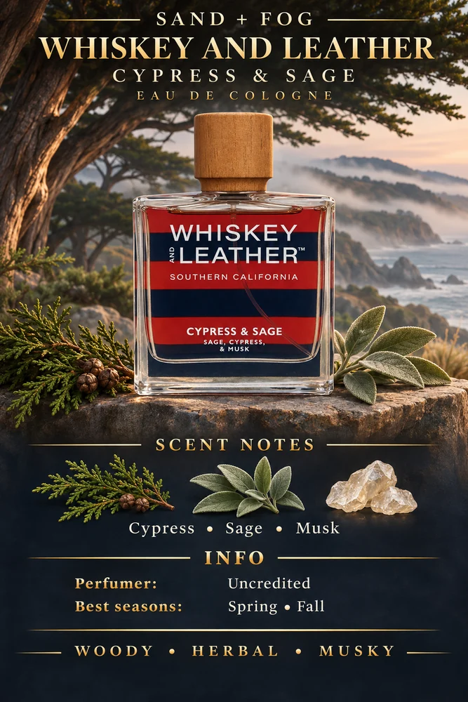

Sand + Fog
Whiskey and Leather Cypress & Sage
β Beta Designer In collection
Randy's rating6/10
Public rating—/10
Overall R—/25
Normalized N—
R and N are left blank because the public rating is missing (there is no dedicated Fragrantica or Parfumo page). How scores work
Randy's notesNight Time rotation: soft enough to sleep in
Notes
Top notes
- cypress
Heart notes
- sage
Base notes
- musk
Details
| House | Sand + Fog |
|---|---|
| Type | Designer · β Beta |
| Concentration | — |
| Released | — |
| Perfumer | — |
| Scent family | Aromatic, Musky & Powdery |
| Best seasons | Spring, Fall |
Sources
No Fragrantica or Parfumo page; no public ratings found. Left blank. Checked 2026-11-14.